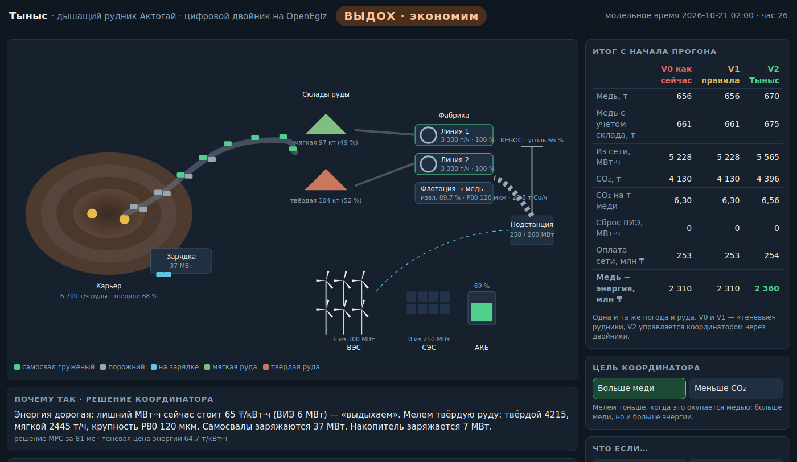

Конкурс «Цифровой рудник на OpenEgiz» · команда «Суперкрошки»
Тыныс — дышащий рудник Актогай
Цифровой двойник реального медного рудника, который «дышит» вместе с ветром и солнцем: меньше угля — та же или больше меди.
shrailymadil-debug · liyaaal · yusubovanazik
Проблема
- Актогай потребляет ≈ 2 030 ГВт·ч в год — ≈ 230 МВт непрерывно, ≈ 35 кВт·ч на тонну руды (KAZ Minerals, 2024).
- Электроэнергия Казахстана на 66 % угольная: ≈ 0,79 т CO₂ на МВт·ч → ≈ 1,6 млн т CO₂ в год.
- Ветер и солнце у рудника есть, но они непостоянны: когда ветер дует ночью, а мельницы уже загружены, энергию сбрасывают.
- Рудник работает «ровно» и не умеет подстраиваться под энергию.
Вопрос: как руднику брать больше ветра и солнца, не теряя меди?
2
Идея: вдох и выдох
ВДОХ — энергии много
- мелем твёрдую руду
- мелем тоньше — больше меди
- заряжаем электросамосвалы и накопитель
ВЫДОХ — энергии мало
- мелем мягкую руду, твёрдую копим на складе
- самосвалы ездят на заряде
- накопитель отдаёт энергию
- можем снизить нагрузку по просьбе KEGOC
Решает координатор: каждый час строит план на 24 ч вперёд (смешанное целочисленное программирование, HiGHS) и объясняет решение словами.
3
Реальный объект и реальные данные
| Величина | Модель (V0, без ВИЭ) | Отчёт KAZ Minerals 2024 |
|---|
| Медь, тыс. т/год | 222 | 221 |
| Электроэнергия, ГВт·ч/год | ≈ 2 014 | ≈ 2 030 |
| Удельный расход, кВт·ч/т | ≈ 35 | ≈ 35 |
| Содержание / извлечение | 0,43 % / ≈ 88 % | 0,43 % / 87,9 % |
- Погода: почасовой ветер на 100 м и радиация в точке рудника за 2024 г. — Open‑Meteo ERA5 (CC BY 4.0).
- Чего на Актогае пока нет (ВЭС 300 МВт, СЭС 250 МВт, накопитель, 42 электросамосвала) — помечено как допущение.
4
Как это построено на OpenEgiz
Модель рудника → MQTT telemetry/<двойник> → Eclipse Ditto (37 двойников kz.tynys:*) → Telegraf → InfluxDB → Grafana
Координатор ⇄ Ditto: читает состояние и сценарий, пишет план и уставки
Экран :8095 ⇄ Ditto: показывает рудник, пишет сценарии «что если»
- Иерархия: рудник → карьер / фабрика / энергия → экскаваторы, самосвалы, зарядки, склады, линии, флотация, ВЭС, СЭС, накопитель, подстанция.
- Запуск:
make tynys — проверено на Ubuntu 24.04 с нуля.
5
Экран рудника

6
Что показал двойник (год, реальная погода 2024)
| ВЭС 300 МВт + СЭС 250 МВт | CO₂, тыс. т | Медь, тыс. т | Сброс ВИЭ, ГВт·ч |
|---|
| Сегодня (без ВИЭ) | 1 591 | 222,1 | 0 |
| ВИЭ без координации | 933 | 222,1 | 96 |
| ВИЭ + Тыныс, цель «медь» | 983 | 226,3 | 50 |
| ВИЭ + Тыныс, цель «CO₂» | 924 | 222,0 | 74 |
- −41 % CO₂ даёт строительство ВИЭ — двойник показывает, сколько строить (25 вариантов).
- Координация: вдвое меньше сброса ветра и солнца и +1,9 % меди, или −1…4 % CO₂ без потери меди.
7
Кому и какие решения
Энергетик и диспетчер — каждый час
- какую руду и как тонко молоть
- когда заряжать самосвалы
- сколько МВт можно отдать KEGOC и на сколько часов («Тыныс‑резерв»)
Руководство — раз в год
- сколько ВЭС и СЭС строить
- цель: больше меди или меньше CO₂
«Что если»: штиль, авария линии, запрос KEGOC −80 МВт, твёрдая руда, план +10 %, отказ накопителя — кнопкой и с отменой.
8
Честно об ограничениях
- Модель часовая; движение самосвалов на карте — анимация цикла, а не реальная дорога карьера.
- Прогноз погоды — реальный ряд с модельной ошибкой. Это не архив настоящих прогнозов. ERA5 занижает ветер.
- Тонкий помол ради меди повышает CO₂ на тонну на 3 % — поэтому есть цель «CO₂».
- Накопитель 60 МВт почти не добавляет меди. Гипотеза «молоть крупнее, когда энергии мало» почти не подтвердилась.
Польза для людей: меньше угля и чище воздух, а работники рудника понимают каждое решение — двойник объясняет его словами.
9